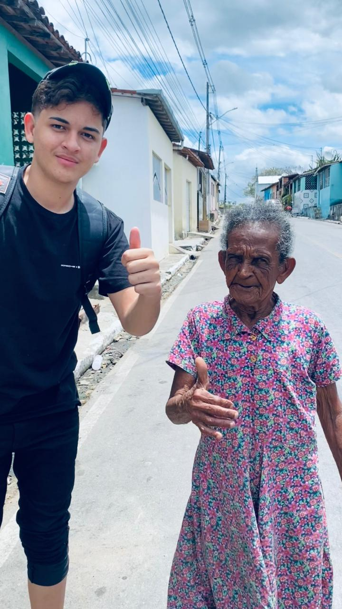

Aqui voce irá encontrar: Aqui estão os currículos e os temas livres de Alex da Silva e Allan Teixeira. Faça o uso dos botões do menu para navegar entre as páginas.
Descrição do que você encontrará na página:
Currículo de Alex da Silva
Nome: Alex da Silva Idade: 17 anos Cidade/Estado: Minha cidade / Meu estado Email: Email@aluno.ifal.edu.br Telefone: (XX) XXXXX-XXXX Endereço: Meu endereço Formação: Instituto Federal de Alagoas Curso: Técnico em Informática Finalização prevista: 2026
Experiência
Twister Cursos Monitor Trabalhando desde 2025
Habilidades
Ótima comunicação Trabalho em equipe Organização
Memes Brasileiros Antigos
Os melhores memes brasileiros antigos incluem: Taca-le pau nesse carrinho, Marcos Eita, Giovana! Juliana está desmaiada Luiza do Canadá e muitos outros.
O meme Pesadão surgiu dos comerciais da Pesadão LifeStyle e ficou famoso pelos bordões e pelo jeito exagerado das propagandas.
"Não interessa pra você, palhaço!" Surgiu em uma entrevista e se tornou um dos memes mais famosos da internet.
O Engomadinho ficou conhecido por representar pessoas muito formais e preocupadas com a aparência.
Currículo de Allan Teixeira

Idade: 17 anos Cidade: Minha cidade Telefone: (XX) XXXXX-XXXX E-mail: Email@aluno.ifal.edu.br
Objetivo Profissional
Atuar na área da informática, adquirir experiência e desenvolver novas habilidades.
Stranger Things
A série Stranger Things possui diversos personagens importantes. Entre eles estão: Eleven Mike Wheeler Dustin Henderson Lucas Sinclair Will Byers Max Mayfield Nancy Wheeler Steve Harrington Jonathan Byers Robin Buckley Joyce Byers Jim Hopper